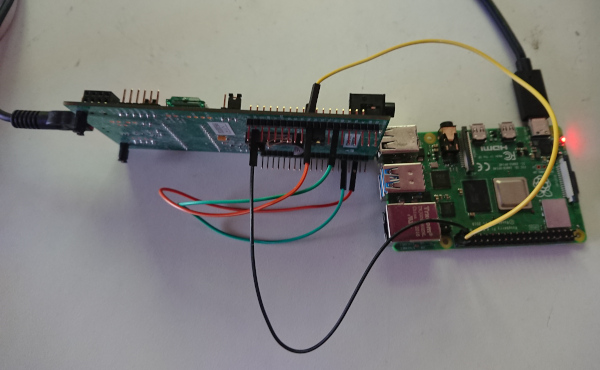
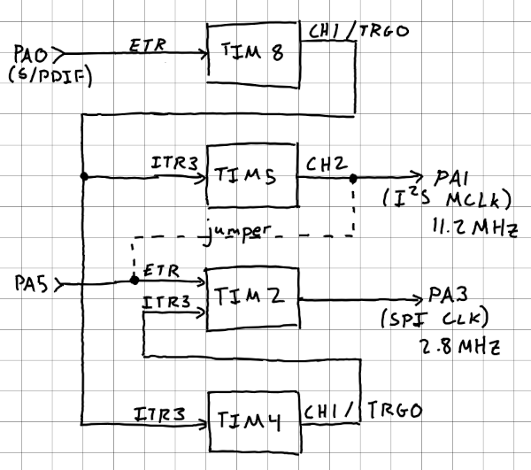
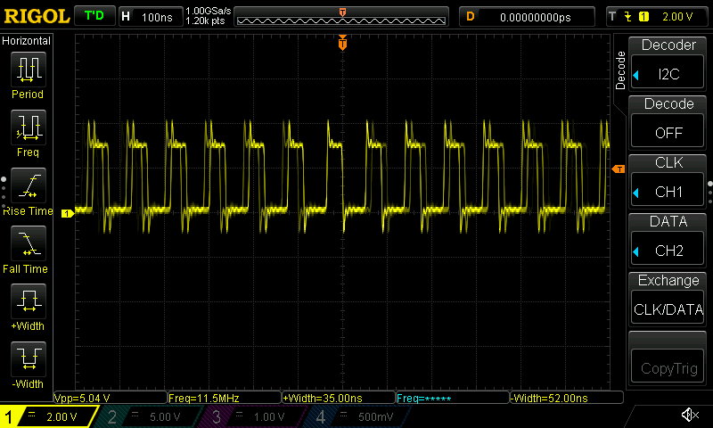

Last time I moved, I set up my receiver and speakers across the room from my desk and computer. It's a pretty long (~20 feet) cable run. I was worried the audio quality would degrade over that distance, especially over my cheap cables. While that didn't end up being a issue, I considered a lot of possible solutions, like using differential signals, Bluetooth, PulseAudio, or S/PDIF. While I have no need for a S/PDIF decoder since the analog signal works just fine, the idea stuck rattled around in my head for a while. My STM32L476 Discovery board has an I2S DAC on it, but no hardware S/PDIF decoder, so I figured it would be fun to write a S/PDIF to I2S converter.
S/PDIF uses biphase mark encoding to create a self clocking signal. S/PDIF sends its data in frames, each of which is made of two subframes. Each subframe is a sample for a channel. Each subframe starts with a synchronization pattern (which is not biphase mark encoded) which denotes both the start of frame as well as a which channel it is. STM has an application note on using their higher end microcontrollers to decode S/PDIF using a built in hardware peripheral, but it also includes information on the protocol itself, if you want to learn more.
To decode S/PDIF there are a few basic steps:
The first problem was finding a S/PDIF source. My old desktop has an TOSLINK (optical) port but no coax and I'd prefer to not have to make/buy a converter. Luckily I have a spare Raspberry Pi 4 and there's a project to send raw PCM data out as S/PDIF. I ran into a few issues getting it to work on a Pi 4 but once I fixed them it worked great.
The STM32L476 does not have a hardware S/PDIF decoder, nor does it have a clock recovery peripheral. However, it does have "Digital Filter for Delta Sigma Modulators" peripheral that can recover the clock from manchester encoded data streams. My initial plan was to use that for clock recovery and connect the CKOUT signal on the PC2 pin to the SPI clock input and read the data in as SPI. Unfortunately, that pin isn't broken out on the header on my the development board and is instead hooked up to a magnometer. I didn't want to bodge-solder on a lead to the pin so that plan was out. I'm also not sure if a recovered clock signal is output onto CKOUT when doing clock recovery. It may only be used when the STM is generating the clock signal itself. The reference manual is unclear.
My next idea was to use timers triggered on the rising edge of the S/PDIF signal to generate the SPI clock and I2S MCLK. However, since the MCLK frequency isn't a nice multiple of my 80MHz core clock, they need to be synced _very_ frequently. For 48kHz audio the MCLK frequency is about 12MHz, which means a period of 6.5 cycles. Since there are potentially 8 MCLK cycles between rising edges of the S/PDIF signal that means 4 cycles of drift since the period must be an integer. Given the time between transitions is only 3 cycles, that's a problem.
So I tried to see if I could sync every edge, whether it's rising or falling. Unfortunately, the
timers don't support this: you can sync on a rising edge or a falling edge (controlled by the
ETP bit in the SMCR register) but not both. My idea for solving this was
to use DMA to toggle the state of that bit by copying the bit from GPIO to the SMCR
register using bit banding.
The first problem is that the GPIO peripheral's memory mapped registers are outside the bit
banding memory range. This was okay, however since the pin I was using was PE8, which means the data
is in the LSB of the second byte of the GPIOE->IDR register. I could just use that
byte as the DMA source.
The second problem is that you can't use DMA and bit banding together. Bit Banding is handled by the core and thus not available to peripherals like DMA. How unfortunate. This was pretty much the death knell of the sync-every-edge idea.
In the end I just ran it at 44.1kHz which divides more evenly. I still need to sync the timers but don't need to do it every edge.
Once I had clock recovery working (again, more on that later), I could read the S/PDIF data stream in using the SPI peripheral. The next step is syncing the SPI stream so it starts capturing the data at the start of the frame. By finding the synchronization sequence in the captured data I can calculate how many S/PDIF clock cycles the receiver is off by then pause the SPI for that many cycles to get it synced. I planned to use a timer to generate a pulse and connect it to the SPI NSS pin. Sadly, if you disable the NSS line it does not pause the current SPI capture; it aborts it. Then when NSS is active again it starts a new capture. This would work great if I could be certain I was pausing it at a given time (i.e. at the end of an SPI capture), but with a clock period of 14 clock cycles I don't have that luxury. I need to be able to pause mid capture and resume like nothing happened.
I ended up disabling the SPI clock during the pulse instead, but more on that in the next section.
My development board has an I2S DAC attached to the SAI1 peripheral,
which I was hoping to use. However in order to stay in sync with the S/PDIF stream I need to generate
the MCLK signal based on the clock recovered from the S/PDIF stream. The SAI1 peripheral
allows for this but only on pin PA0 which is needed for the timers (more on that
later). There wasn't any way to get around that so I gave up on generating audio and decided to just
decode the S/PDIF and call it a day.
To generate the clock I use several timers. They have a two main jobs: generating the SPI clock and pausing it for a precise length of time to sync the frames. Originally they also needed to generate the MCLK signal for the I2S DAC, but that part was abandoned. Below is a diagram showing how all the timers are connected.
Most of how the design is dictated by what GPIO pins I had available and how the timers are connected internally. There are only two timers with external GPIO triggers (TIM8 and TIM2) and TIM8's only available output channel is on the same pin as the TIM2 external trigger. I ended up using TIM8 to generate an internal MCLK signal synced to the S/PDIF stream, then TIM5 to relay its output to a GPIO pin.
To recover the clock, TIM8 is set up in external trigger and reset mode. It generates PWM on channel 1 with the appropriate period and duty cycle for the recovered clock signal. The external trigger is connected to the S/PDIF signal, which ensures every rising edge of the S/PDIF signal it gets synced. Since the microcontroller clock and S/PDIF clock are independent of each other and not even multiples of each other this generates a lot of jitter, but that's fine for just decoding.
To generate the SPI clock in sync with the S/PDIF source and in a way that can be paused, TIM2 operates in gated + external clock mode and divides its external clock by 2. In this mode the external clock must be from GPIO, so a jumper connects the output of TIM5 to the external trigger of TIM2. The internal trigger is the gate and controls if the timer is active or not. It is connected to TIM4 which generates the pulse to pause it. Its output is the SPI clock and connected to the SPI peripheral via a jumper.
TIM4 uses the internal MCLK signal from TIM8 and generates the frame sync pulses. Once the first frame is captured, the software determines the offset and configures TIM4 to generate a pulse which pauses TIM2 (and thus the SPI clock) long enough to be start up again in sync.
Biphase mark is easy enough to decode. You simply take your data, XOR it with a copy bit shifted by one, then read the data you want off of every other bit. There are some fancier ways to do this using more complicated bitwise math, but the naive approach was fast enough so I didn't bother.
The project decodes S/PDIF just fine. It would have been nice to get it actually using the DAC but at this point I'm tired of this project and want to work on other things. I tested by running
[root@pi ~]# yes $'\xad\xde\xef\xbe' | tr -d '\n' | ./raspdif0xdeadbeef. Note
the data in the argument to yes is byte swapped since raspidif expects little endian
data.